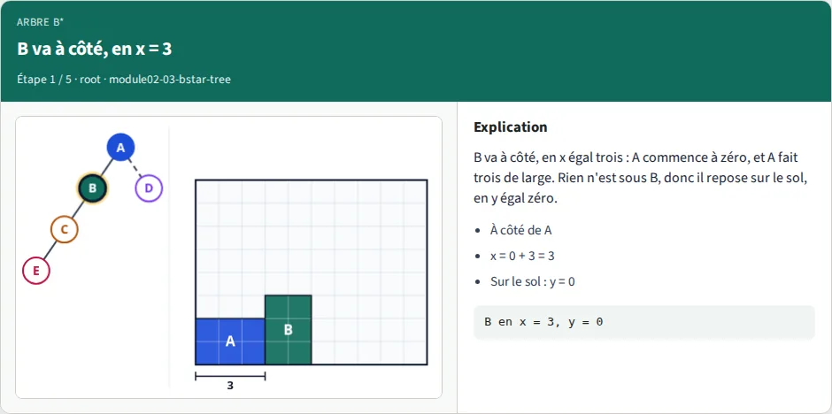
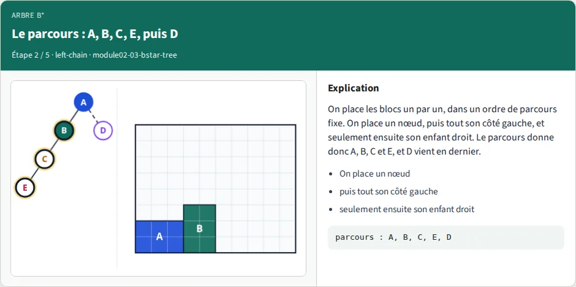
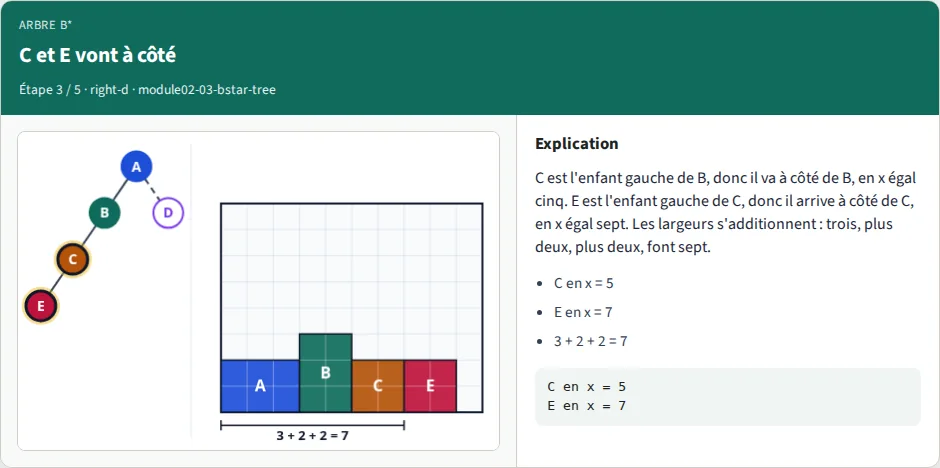
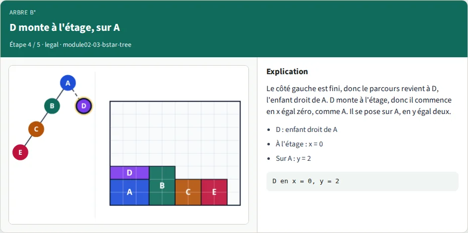
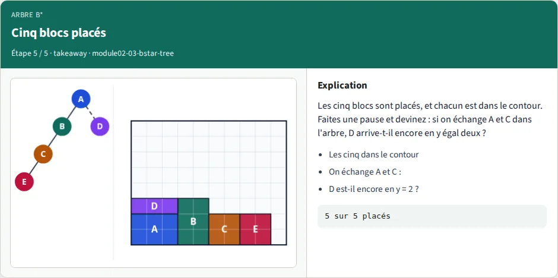
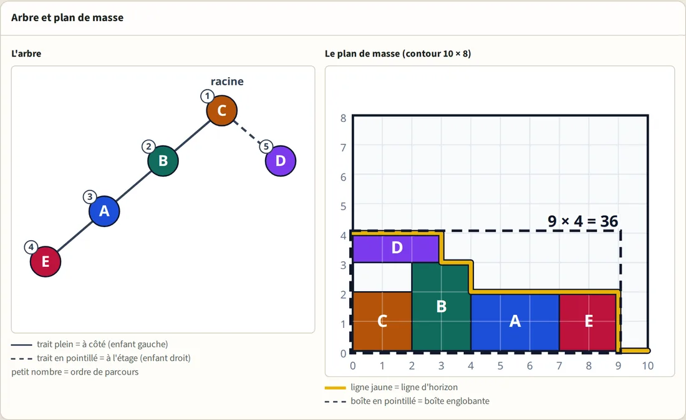

Lab 05 · Représentations
Plan de masse par arbre B*
Un plan de masse à cinq blocs peut s'écrire comme un arbre. Ce lab construit l'image à partir de l'arbre (l'enfant gauche va à côté, l'enfant droit va à l'étage, chaque bloc tombe sur la ligne d'horizon), la note avec sa boîte englobante, et la change en échangeant deux noms, en tournant un bloc ou en déplaçant une feuille. Le recuit simulé, dans un lab plus tard, fait exactement ces changements des milliers de fois.
Cinq courtes parties : la suivante démarre toute seule. Choisissez une partie ou une vitesse ; elle s'applique à toutes les parties. Chaque partie existe aussi en leçon interactive : utilisez le lien sous la partie.
Diapositives
Les 32 diapositives de la vidéo. Cliquez sur l'une d'elles pour l'afficher en grand, ou téléchargez la présentation complète.


Pas à pas
Les cinq images de la vidéo qui placent l'arbre de référence bloc par bloc, avec la légende de chaque étape.


- À côté de A
- x = 0 + 3 = 3
- Sur le sol : y = 0


- On place un nœud
- puis tout son côté gauche
- seulement ensuite son enfant droit


- C en x = 5
- E en x = 7
- 3 + 2 + 2 = 7


- D : enfant droit de A
- À l'étage : x = 0
- Sur A : y = 2


- Les cinq dans le contour
- On échange A et C :
- D est-il encore en y = 2 ?
Lab interactif

Construisez vous-même les plans de masse, directement dans le navigateur :
- Choisissez le parent et le côté de chaque bloc (à côté ou à l'étage), puis appuyez sur Placer et regardez les blocs tomber sur la ligne d'horizon.
- Échangez deux noms, tournez un bloc, déplacez une feuille, et observez la boîte englobante, les cases perdues et si le plan de masse est valide.
- Chargez cinq arbres prêts à l'emploi (l'arbre de référence, A et C échangés, l'arbre d'ordre de parcours, la longue rangée, un mauvais arbre de 40).
- Devinez où D va arriver avant de placer, puis comparez.
Neuf défis, de l'initiation à l'approfondissement, vérifient l'arbre que vous avez construit, pas le bouton sur lequel vous avez cliqué. Un changement après Placer demande un nouveau Placer, et la révélation de révision ne compte jamais.
Implémentation (parcours A)
Écrivez vous-même la fonction de placement et ses aides (placer, boîte englobante, valide, échanger, tourner, déplacer une feuille) et vérifiez-les avec les résultats de référence. Les commandes ci-dessous se lancent dans le dépôt du cours, depuis courses/learn_floorplanning/module02-03-bstar-tree/.
tiny_modules.jsonLes cinq blocs et le contour 10 × 8
golden.jsonArbre de référence : D repose exactement sur A
lift.jsonA et C échangés : B soulève D et laisse un trou
order.jsonOrdre de parcours : E est placé avant D
floor.jsonUn enfant gauche tombe sur le sol
swap.jsonMauvais arbre (40) : un échange donne 27
rotate.jsonLongue rangée : une rotation la fait tenir
move.jsonDéplacement de feuille : 40 devient 28
best.jsonLes plans de masse les plus serrés : 6 × 4 = 24
bstar_check.pyVérificateur ; --impl contrôle votre code
Exemples — arbre B*
Parcours A (implémentation). Les cinq blocs sont dans examples/tiny_modules.json, les arbres d'exemple dans examples/*.json,
et le corrigé est examples/bstar_check.py.
Chaque nombre ci-dessous a été affiché par ce vérificateur (python3 examples/bstar_check.py --show, --json).
Lancez-le depuis le dossier du module ; il n'a besoin que de la bibliothèque standard de Python.
Objectif
Un plan de masse à cinq blocs peut s'écrire comme un arbre binaire. On construit l'image à partir de l'arbre (placer, en anglais pack), on la note (boîte englobante, valide), et on change l'image en changeant l'arbre (échanger, tourner, déplacer). Le recuit simulé (un lab plus tard) fait exactement ces trois changements des milliers de fois.
Définitions
- Bloc : un rectangle avec un nom, une largeur
wet une hauteurh. Les tailles s'écriventw x h: « 3 x 2 » fait 3 de large et 2 de haut. Les cinq blocs : A 3x2, B 2x3, C 2x2, D 3x1, E 2x2. Leurs aires font 23 au total. - Contour : la boîte fixe dans laquelle les blocs doivent rester. Ici 10 x 8 (aire 80). L'origine est le coin inférieur gauche et y croît vers le haut.
- Arbre : chaque bloc apparaît exactement une fois. Un nœud a un enfant gauche et un enfant droit, tous deux facultatifs.
Forme texte :
id(gauche,droit),-pour un enfant vide, un simple id pour une feuille.A(B(C(E,-),-),D)est l'arbre de référence : l'enfant gauche de A est B, celui de B est C, celui de C est E, et l'enfant droit de A est D. - Enfant gauche = à côté : il commence au bord droit de son parent. Enfant droit = à l'étage : il commence au même bord gauche que son parent. Les noms sont à l'inverse de ce qu'on devine, alors dites « à côté » et « à l'étage ».
- Ligne d'horizon (le « contour » des articles scientifiques, à ne pas confondre avec le contour de la puce) : pour chaque x, le bord supérieur de ce qui est déjà placé (0 là où il n'y a rien).
Placer un bloc relève la ligne d'horizon à
y + hsur l'emprise du bloc[x, x + w). - Valide : chaque bloc est dans le contour et deux blocs ne se chevauchent pas (se toucher par un bord est permis).
- Boîte englobante : le plus petit rectangle autour de tous les blocs : largeur = plus grand
x + w, hauteur = plus grandy + h. Score = aire de la boîte englobante. Cases perdues = aire de la boîte englobante − 23. - Deux espaces perdus différents : l'espace perdu du contour vaut
80 − 23 = 57et ne change jamais avec l'arbre. L'espace perdu de la boîte englobante (les cases perdues) est ce qu'un arbre change : 4 pour l'arbre de référence.
API (ce que cherche --impl)
Un arbre est un dictionnaire imbriqué : {"id": "A", "left": {...}, "right": {...}}, un enfant absent est une clé absente.
modules est une liste de {"id", "w", "h"}, outline vaut {"w", "h"}. Un placement (pack) est {id: {"x", "y", "w", "h"}}.
pack_bstar(tree, modules) # le placement, selon la règle ci-dessous
bounding_box(pack) # (largeur, hauteur)
is_legal(pack, outline) # dans le contour et sans chevauchement
swap(tree, a, b) # NOUVEL arbre, noms a et b échangés, forme inchangée
rotate(modules, id) # NOUVELLE liste de blocs, w et h de ce bloc échangés
move_leaf(tree, leaf, parent, side) # NOUVEL arbre, feuille coupée et accrochée à la place libre "left" ou "right" de parent
Ne modifiez jamais l'arbre ni la liste reçus : renvoyez-en un nouveau. move_leaf lève une erreur si le nœud n'est pas une
feuille, s'il est la racine, ou si la place est prise. Les fonctions pas encore écrites sont signalées SKIP.
La règle (exacte)
walk(node, x): # PARCOURS EN PRÉORDRE
y = highest skyline value over [x, x + node.w)
place node at (x, y)
raise the skyline to y + node.h over [x, x + node.w)
walk(node.left, x + node.w) # TOUT le sous-arbre gauche d'abord (à côté)
walk(node.right, x) # puis l'enfant droit (à l'étage)
walk(root, 0)
- Un bloc tombe jusqu'à toucher le point le plus haut sous son emprise, donc
yne se tape jamais à la main. - Pour un enfant droit,
y >= parent.y + parent.h(il est au moins sur son parent). C'est strictement plus quand un voisin plus haut dépasse sous lui : voir lift. - Le
yd'un enfant gauche n'est pas celui de son parent : il tombe sur ce qu'il y a dessous, jusqu'à 0 : voir floor. - L'ordre compte. Placer l'enfant droit d'abord change le placement de 1764 arbres sur 5040 : voir order.
Opérations
swap(tree, a, b) échange les deux noms ; qui est enfant gauche ou droit de qui ne change pas
rotate(modules, id) w, h = h, w pour ce bloc ; l'arbre ne change pas
move_leaf(tree, leaf, p, side) coupe la feuille de son parent, l'accroche à p.side (cette place doit être libre)
Tableaux de référence
Les arbres d'exemple (examples/*.json)
| Exemple | Arbre | Positions (x,y) | Boîte | Aire | Perdues | Valide | Pourquoi |
|---|---|---|---|---|---|---|---|
| golden | A(B(C(E,-),-),D) |
A(0,0) B(3,0) C(5,0) D(0,2) E(7,0) | 9x3 | 27 | 4 | oui | D repose exactement sur A : D.y = A.y + A.h = 2 |
| lift | C(B(A(E,-),-),D) |
A(4,0) B(2,0) C(0,0) D(0,3) E(7,0) | 9x4 | 36 | 13 | oui | l'arbre de référence avec A et C échangés : B fait 3 de haut et dépasse sous D, donc D arrive en 3, pas en 2, et laisse un trou de 2 cases |
| order | A(B(C(-,E),D),-) |
A(0,0) B(3,0) C(5,0) D(3,4) E(5,2) | 7x5 | 35 | 12 | oui | E est placé avant D et le soulève à 4. Enfant droit d'abord : boîte 7x8 |
| floor | A(B(C(-,D(E,-)),-),-), A tourné |
A(0,0) B(2,0) C(4,0) D(4,2) E(7,0) | 9x3 | 27 | 4 | oui | E est l'enfant gauche de D mais tombe en y = 0 : il n'y a rien dessous |
| swap, départ | A(B(C(D,-),-),E) |
A(0,0) B(3,0) C(5,0) D(7,0) E(0,2) | 10x4 | 40 | 17 | oui | un mauvais arbre pour les mêmes cinq blocs |
swap, après swap(D,E) |
A(B(C(E,-),-),D) |
l'arbre de référence | 9x3 | 27 | 4 | oui | un échange enlève 13 cases perdues |
| rotate, départ | A(B(C(D(E,-),-),-),-) |
A(0,0) B(3,0) C(5,0) D(7,0) E(10,0) | 12x3 | 36 | 13 | non | chaque bloc est un enfant gauche : 3+2+2+3+2 = 12 > 10, E dépasse |
rotate, après rotate(D) |
même arbre, D vaut 1x3 | D(7,0) E(8,0) | 10x3 | 30 | 7 | oui | 3+2+2+1+2 = 10 : la rangée tient |
| move, départ | A(B(C(D,-),-),E) |
comme « swap, départ » | 10x4 | 40 | 17 | oui | |
move, après move_leaf(D,B,right) |
A(B(C,D),E) |
A(0,0) B(3,0) C(5,0) D(3,3) E(0,2) | 7x4 | 28 | 5 | oui | D est maintenant à l'étage de B |
| best | A(D,C(E(B,-),-)) |
A(0,0) B(4,1) C(0,2) D(3,0) E(2,2) | 6x4 | 24 | 1 | oui | B est soulevé sur D : seule la ligne d'horizon peut donner y = 1 à B |
L'exemple lift est l'arbre de référence avec A et C échangés (derived_from dans lift.json).
Pas à pas : l'arbre de référence
| Étape | Bloc | Depuis | En (x,y) | Retenu par | Ligne d'horizon après | Boîte après |
|---|---|---|---|---|---|---|
| 1 | A | racine | (0,0) | sol | [0,3)=2 |
3x2 |
| 2 | B | gauche de A | (3,0) | sol | [0,3)=2 [3,5)=3 |
5x3 |
| 3 | C | gauche de B | (5,0) | sol | [0,3)=2 [3,5)=3 [5,7)=2 |
7x3 |
| 4 | E | gauche de C | (7,0) | sol | [0,3)=2 [3,5)=3 [5,9)=2 |
9x3 |
| 5 | D | droit de A | (0,2) | A | [0,5)=3 [5,9)=2 |
9x3 |
python3 examples/bstar_check.py --show affiche ce parcours pour chaque exemple, et --json l'affiche en données
(arbres, placements, boîtes englobantes et ligne d'horizon après chaque placement).
Les 5040 arbres sur A à E
| Grandeur | Valeur |
|---|---|
| arbres étiquetés (Catalan(5) x 5!) | 5040 |
| valides dans le contour 10x8 | 4680 |
| avec chevauchement | 0 (un arbre B* ne peut pas se chevaucher, par construction) |
| non valides car trop larges / trop hauts | 120 / 240 (chaque arbre non valide dépasse, rien d'autre) |
| plus petite aire de boîte englobante | 24 (6x4), atteinte par 8 arbres ; 23 est impossible (23 est premier et B fait 3 de haut) |
| arbres valides avec une boîte plus petite que 27 | 216 |
| le placement change si l'enfant droit est placé d'abord | 1764 |
| le placement change si y est lu chez le parent au lieu de la ligne d'horizon | 2714 |
| un enfant droit soulevé au-dessus du bord supérieur de son parent | 360 |
| un enfant gauche soulevé au-dessus du y de son parent | 254 |
Les 8 arbres d'aire 24 (examples/best.json) :
A(D,C(E(B,-),-)), A(D,E(C(B,-),-)), B(C(E,-),D(A,-)), B(E(C,-),D(A,-)), C(E(B,-),A(D,-)),
D(A,B(C(E,-),-)), D(A,B(E(C,-),-)), E(C(B,-),A(D,-)). Chacun perd 1 case.
Une opération à la fois
| Arbre | Meilleure aire après un échange (sur 10) | Meilleure après une rotation (sur 5) | Meilleure après un déplacement de feuille (sur 8) |
|---|---|---|---|
| référence (27) | 27 (4 échanges gardent 27) | 27 (2 gardent 27) | 27 (1 garde 27) |
| départ swap (40) | 27, seulement swap(D,E) |
32 | 28 (deux déplacements : D vers B.right, D vers E.left) |
Aucune opération seule n'améliore donc l'arbre de référence, et depuis le départ swap, l'échange de D et E est le seul chemin vers 27. Pour la chaîne où tout est enfant gauche, 12 des 32 ensembles de blocs tournés sont valides ; D est le seul bloc dont la rotation seule la rend valide.
À essayer
python3 examples/bstar_check.py # reference: all PASS
python3 examples/bstar_check.py --show # every pack, step by step
python3 examples/bstar_check.py --vs-node # same packs as the browser lab's JS, all 5040 trees
python3 examples/bstar_check.py --impl my_bstar.py # check YOUR functions
python3 examples/bstar_check.py --impl examples/wrong/right_first.py # a deliberately wrong one
python3 examples/bstar_check.py --impl examples/wrong/no_contour.py # another one
python3 examples/bstar_check.py --json > bstar.json # trees, packs, skylines as data
examples/wrong/ contient deux programmes de placement avec exactement un bogue chacun : l'enfant droit placé avant le sous-arbre gauche, et
pas de ligne d'horizon (y lu chez le parent). Les deux placent correctement l'arbre de référence, donc le seul test de l'arbre de référence ne peut pas les
attraper. Lancez-les et lisez quelles lignes sont FAIL. La ligne « all 5040 trees » attrape les deux.
Questions de départ (demandez « pourquoi »)
- Implémentez
pack_bstaret affichez le tableau pas à pas de l'arbre de référence. Quel bloc retient D, et pourquoiD.yvaut-il 2 ? - Dans
lift, D arrive en y = 3, pas en 2. Quel bloc le soulève ? Combien de cases contient le trou au-dessus de C ? - Dans
order, pourquoi D finit-il en y = 4 ? Placez D avant le sous-arbre gauche à la main et dites quelle boîte vous obtenez. - Dans
floor, E est l'enfant gauche de D mais se trouve en y = 0. Expliquez en une phrase pourquoi « enfant gauche » ne veut pas dire « même rangée ». - Depuis le départ swap, essayez les dix échanges et notez chaque aire. Pourquoi un seul atteint-il 27 ?
- Dans la chaîne, tournez chacun des cinq blocs à tour de rôle. Quelle rotation seule la rend valide, et pourquoi les quatre autres n'aident-elles pas ?
- Lancez
--impl examples/wrong/no_contour.py. Quels exemples réussit-il, et qu'ont-ils en commun ?
Livrables attendus
- Un
my_bstar.pyqui n'affiche aucun FAIL face àbstar_check.py. - Le tableau pas à pas d'un exemple, avec la ligne d'horizon après chaque placement.
- Deux phrases : l'une sur la raison pour laquelle l'ordre de parcours compte, l'autre sur la raison pour laquelle la ligne d'horizon compte (utilisez
orderetlift).
Pour aller plus loin
- Battez l'arbre de référence : trouvez un arbre valide avec une boîte plus petite que 27 (il en existe 216) sans regarder
best.json. - Atteignez 24 sans tourner aucun bloc. Combien des 5040 arbres y arrivent ? Quel bloc doit être soulevé sur un autre ?
- Écrivez
move_leafpour qu'il accepte aussi de déplacer une feuille de l'autre côté de son propre parent, et listez les 8 déplacements de feuille du départ swap avec leurs aires.
Quiz
8 questions rapides sur ce lab. Choisissez une réponse pour chacune, puis vérifiez.
Transcription complète de la narration
Plan de masse par arbre B*
Cinq blocs, un cadre, et un arbre qui dit où va chaque bloc. Pouvez-vous dessiner l'image à partir de l'arbre seul ? À la fin, oui, et vous trouverez même l'image la plus serrée de toutes.
Cinq blocs
Une puce est faite de grandes pièces rectangulaires, appelées blocs. Le nôtre a cinq blocs, nommés de A à E. Ils sont sur du papier quadrillé : on peut compter chaque largeur et chaque hauteur.
Le contour
Un plan de masse dit où se trouve chaque bloc sur la puce. Chaque bloc doit rester dans un cadre appelé le contour. Notre contour fait dix cases de large et huit cases de haut. Plus les blocs sont serrés, plus la puce peut être petite.
Un arbre comme recette
Noter chaque position est long, alors nous utilisons une recette : un arbre B-étoile. Chaque bloc est un nœud de l'arbre. Le nœud du haut, A, s'appelle la racine. Chaque nœud peut avoir deux enfants : un enfant gauche et un enfant droit.
La racine va dans le coin
La racine va dans le coin inférieur gauche du contour. À partir de ce coin, x compte les cases vers la droite, et y compte les cases vers le haut.
À gauche, à côté ; à droite, à l'étage
Un enfant gauche va à côté : collé contre le côté droit de son parent. Un enfant droit va à l'étage : sur son parent, avec le même bord gauche. Les noms semblent inversés : gauche veut dire à côté, droite veut dire à l'étage. Dans l'arbre, un trait plein veut dire à côté, un pointillé veut dire à l'étage.
Où va B ?
A fait trois cases de large et deux cases de haut. B est l'enfant gauche de A. Faites une pause et devinez : où va le bord gauche de B ?
B va à côté, en x = 3
B va à côté, en x égal trois : A commence à zéro, et A fait trois de large. Rien n'est sous B, donc il repose sur le sol, en y égal zéro.
Le parcours : A, B, C, E, puis D
On place les blocs un par un, dans un ordre de parcours fixe. On place un nœud, puis tout son côté gauche, et seulement ensuite son enfant droit. Le parcours donne donc A, B, C et E, et D vient en dernier.
C et E vont à côté
C est l'enfant gauche de B, donc il va à côté de B, en x égal cinq. E est l'enfant gauche de C, donc il arrive à côté de C, en x égal sept. Les largeurs s'additionnent : trois, plus deux, plus deux, font sept.
D monte à l'étage, sur A
Le côté gauche est fini, donc le parcours revient à D, l'enfant droit de A. D monte à l'étage, donc il commence en x égal zéro, comme A. Il se pose sur A, en y égal deux.
Cinq blocs placés
Les cinq blocs sont placés, et chacun est dans le contour. Faites une pause et devinez : si on échange A et C dans l'arbre, D arrive-t-il encore en y égal deux ?
Échanger A et C
Non : D arrive une case plus haut. Voici l'arbre où A et C sont échangés : C est la racine, et A prend l'ancienne place de C. C, B, A et E vont toujours à côté, l'un après l'autre.
La ligne d'horizon
Imaginez maintenant les blocs comme une ville, vue de loin. Le bord supérieur de tout ce qui est déjà placé s'appelle la ligne d'horizon. Un nouveau bloc tombe du ciel, comme au Tetris, jusqu'à toucher la ligne d'horizon.
D se pose sur B
D fait trois de large, donc il passe au-dessus de C et d'une partie de B. B fait trois de haut, donc il arrête D en y égal trois. Cela laisse un trou de deux cases vides au-dessus de C.
La boîte englobante
Alors, quel plan de masse est le meilleur ? Pour comparer, on dessine la boîte englobante, le plus petit rectangle autour des blocs. Pour le premier arbre, elle fait neuf de large et trois de haut : vingt-sept cases.
Les cases perdues
Les cinq blocs couvrent vingt-trois cases. Les quatre autres cases de la boîte sont vides : ce sont des cases perdues. Moins il y a de cases perdues, plus le plan de masse est serré.
Un échange, un score moins bon
L'arbre échangé a une boîte de neuf sur quatre : trente-six cases, treize perdues. Un seul échange de deux noms a donc changé l'image et le score. Vingt-sept est devenu trente-six : le premier arbre est meilleur.
Une longue rangée
Prenons maintenant un arbre où chaque enfant est un enfant gauche. Faites une pause et devinez : cette longue rangée tient-elle dans le contour ?
Chaque bloc à côté
Non, elle ne tient pas. Chaque bloc va à côté : trois, deux, deux et trois font dix. Le contour est déjà plein, et E attend encore.
Un bloc qui dépasse
E arrive en x égal dix, donc la rangée fait douze cases de large. E dépasse du contour de deux cases. Un plan de masse est valide seulement si chaque bloc est dans le contour. Cette rangée n'est donc pas valide.
Jamais de chevauchement
Remarquez que les blocs ne se chevauchent jamais. Chaque bloc tombe sur la ligne d'horizon, donc il ne peut jamais atterrir dans un autre. Avec un arbre B-étoile, dépasser est la seule façon d'échouer.
Tourner un bloc
On peut tourner un bloc sur le côté : sa largeur et sa hauteur s'échangent. Tournez D, et il fait une case de large et trois de haut. La rangée fait maintenant dix de large : elle tient pile, et elle est de nouveau valide.
Trois petits changements
Tourner est l'un des trois petits changements. On peut aussi échanger deux noms dans l'arbre, comme avec A et C. Ou déplacer une feuille, un bloc sans enfant, vers une place libre de l'arbre. Chaque changement donne un nouveau plan de masse, avec un nouveau score. Faites une pause et devinez : un arbre peut-il battre vingt-sept ? Et quelle est la plus petite boîte ?
Le plan de masse le plus serré
Oui : beaucoup d'arbres battent vingt-sept. Les meilleurs n'ont besoin que de vingt-quatre cases. Voici l'un des meilleurs arbres. Son parcours place A, D, C et E, et B vient en dernier.
B est soulevé par la ligne d'horizon
Sous B, la ligne d'horizon est le haut de D, donc B arrive en y égal un. Il comble le trou, et la boîte fait six de large et quatre de haut : vingt-quatre cases. Une seule case est perdue.
Pourquoi pas vingt-trois ?
Une boîte de vingt-trois cases, sans case perdue, pourrait-elle contenir les cinq blocs ? Vingt-trois cases ne forment qu'un rectangle épais d'une seule case. Le bloc B est trop épais pour cela : vingt-quatre est donc le mieux possible.
Parcours lab dans le navigateur
Construisez maintenant des plans de masse vous-même. Dans le lab du navigateur, vous modifiez l'arbre et vous regardez chaque bloc tomber sur la ligne d'horizon. Les défis vérifient l'arbre que vous avez construit. Soulevez D plus haut, faites tenir la longue rangée, et atteignez vingt-quatre.
Parcours implémentation
Si vous aimez programmer, écrivez la fonction de placement en Python. Le fichier d'exemples donne les règles exactes. Lancez une fois le vérificateur pour afficher toutes les bonnes réponses, puis lancez-le sur votre fichier. Il compare votre placement au bon sur les cinq mille quarante arbres.
À retenir
Enfant gauche : à côté. Enfant droit : à l'étage, avec le même bord gauche. Parcourez l'arbre : le nœud, tout son côté gauche, puis son enfant droit. Chaque bloc tombe jusqu'à toucher la ligne d'horizon. On note un plan de masse avec sa boîte englobante, et on compte les cases perdues. Un arbre ne chevauche jamais, mais il peut dépasser : vérifiez le contour.
À vous de jouer
Choisissez un parcours : le lab dans le navigateur, Python, ou les deux. Cochez chaque case de la liste de contrôle, puis faites le court quiz. La suite, c'est la paire de séquences : deux listes de noms au lieu d'un arbre. Faites une pause et devinez : deux listes décrivent-elles notre plan à vingt-quatre ? Oui : deux listes suffisent. C'est la paire de séquences, dans le prochain lab.